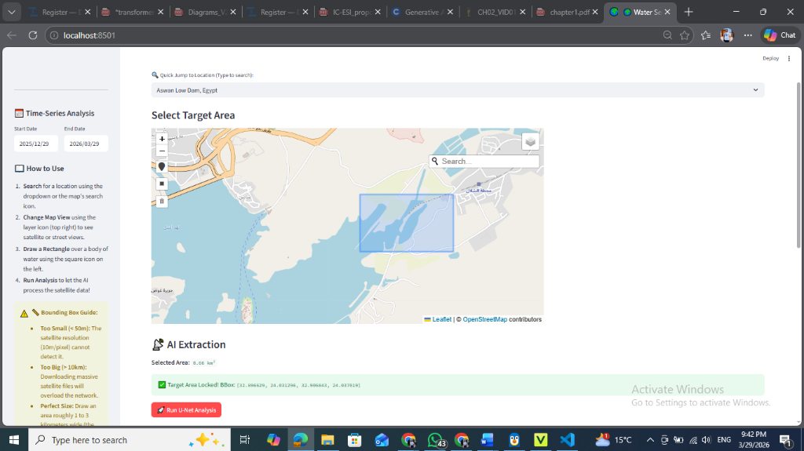
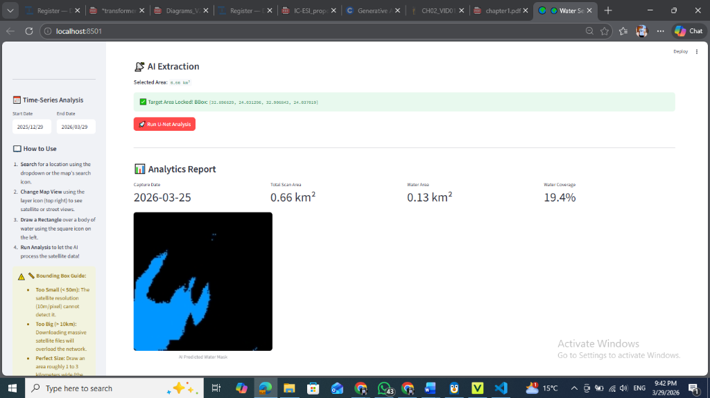

📌 Project Overview Detailed
Standard computer vision networks traditionally rely on 3-channel (RGB) images, making them susceptible to visual misinterpretations where dark shadows, dense forests, or black asphalt are wrongly classified as water.
This project solves this limitation by implementing a 12-channel multispectral AI engine. It digests not just visible light, but Near-Infrared (NIR), Shortwave Infrared (SWIR), and mathematically synthesized geographic probability bands. Combining Deep Learning with a modern high-performance web architecture, the system allows users to interactively draw bounding boxes anywhere on Earth, fetching live satellite geospatial data, running real-time neural network inference, and rendering the highly precise binary water mask instantly.
This project is meticulously architected following the MVC (Model-View-Controller) pattern, ensuring separation of concerns, scalability, and robust deployment pipelines using Docker.
🖥️ Interactive Dashboard Previews
Below are live samples of the Streamlit user interface mapping the AI extraction logic atop real-world geospatial frames.
Phase 1: Selecting the Target Area (Aswan Low Dam)
The user interactively selects a bounding box across the map, which natively prepares the boundaries for multispectral fetching.

Phase 2: AI Extraction & Analytics Report
The U-Net executes its feed-forward pass resulting in a heavily accurate deep-blue predictive mask accompanied by coverage metrics directly rendered on the dashboard.

🛠️ Tools & Technologies
This ecosystem incorporates a broad range of cutting-edge technologies to bridge Machine Learning with full-stack web development.
Machine Learning & Data Science
- TensorFlow / Keras: Primary framework for defining, training, and running inference on the custom U-Net neural network.
- NumPy & SciPy: Used extensively for advanced multidimensional array manipulation.
- Scikit-learn: Employed in metrics calculation and data pipeline structuring.
Geospatial & Image Processing
- Rasterio & CV2 (OpenCV): Reading cloud-optimized GeoTIFFs, cropping strict bounding boxes, and uniformly resizing multispectral bands.
- PySTAC-Client & Planetary Computer: Querying Microsoft's STAC catalogs to locate and authenticate the latest cloud-free Sentinel-2 tiles.
- Folium: Interactive JavaScript map rendered in Python, enabling geospatial inputs and displaying AI overlays.
Backend APIs & Architecture
- FastAPI & Uvicorn: High-performance asynchronous python web framework hosting inference and database logic (Controller).
- SQLAlchemy & GeoAlchemy2: ORM powering schemas, enabling robust SQL insertion of prediction statistics (Model).
- PostgreSQL: Scalable relational database system.
Frontend & Deployment
- Streamlit: Reactive Python framework to build the Data Dashboard and Map Interface (View).
- Docker & Docker Compose: Containerize the FastAPI backend, Streamlit frontend, and spinning up an isolated PostgreSQL database.
🚦 Application Workflow & Data Flow
1. User Input (views/streamlit_ui.py)
The user opens the Streamlit web dashboard. Using a Folium interactive map, they draw a geometric bounding box over a region on Earth and define a timeframe date range. Streamlit packages these GPS coordinates natively into a JSON payload and pushes a POST request to the backend.
2. Backend Routing & Orchestration (controllers/api_router.py)
FastAPI catches the payload at the /api/predict endpoint. It calculates the total real-world Square Kilometers enclosed within the bounding box using rigorous geographic math.
3. Data Ingestion (controllers/satellite_service.py)
The backend triggers PySTAC to poll the Microsoft Planetary Computer. It finds the highest quality imagery within the user-specified timeframe (cloud cover < 5%). Using GDAL configurations, it performs a partial download exclusively for the pixels within the user's bounding box across optical and infrared channels. Crucial Step: The array undergoes strict Min-Max Normalization to map all physical reflectance values optimally between (0.0, 1.0).
4. Neural Engine Prediction (models/unet_inference.py)
The normalized 12-channel (128, 128, 12) NumPy array is batched and passed into the WaterSegmentationModel class. The U-Net executes its feed-forward pass, returning a raw Sigmoid probability mask. A > 0.5 binary threshold executes, generating a strict array where 1 represents Water and 0 represents Land.
5. Data Post-Processing & Persistence
The binary mask calculates total water area and coverage percentage. The array is multiplied by 255, encoded entirely into a lossless Base64 PNG string. The system triggers an SQLAlchemy Database session, permanently logging the statistics into PostgreSQL.
6. Frontend Rendering
The FastAPI server responds with the Base64 image payload and calculated statistics. Streamlit decodes the Base64 string, dynamically maps water pixels to an opaque translucent blue color map, and overlays it atop the original map view natively utilizing Folium's ImageOverlay anchored bounds.
🏗️ Project Architecture (MVC Pattern)
water_segmentation_project/
│
├── ml_pipeline/ # 🧪 OFFLINE: Where the model was trained
│ ├── data/ # Raw and preprocessed .tif files
│ ├── notebooks/ # Jupyter exploratory files
│ └── weights/ # unet_water_seg_v1.h5 (Trained weights)
│
├── app/ # 🚀 ONLINE: The Live MVC Application
│ ├── main.py # The core application engine (FastAPI Root)
│ │
│ ├── models/ # 🧠 MODEL: Data & Intelligence Layer
│ │ ├── database.py # SQLAlchemy tables (e.g., PredictionLog)
│ │ └── unet_inference.py # Object-Oriented U-Net Loader & Predictor
│ │
│ ├── views/ # 🖥️ VIEW: User Interface Layer
│ │ └── (Linked via pages/1_Water_tool.py)
│ │
│ ├── controllers/ # 🚦 CONTROLLER: Business Logic & Routing
│ │ ├── api_router.py # FastAPI endpoint /api/predict
│ │ └── satellite_service.py # PySTAC planetary connection logic
│ │
│ └── core/ # ⚙️ SYSTEM: Configuration
│ ├── config.py # Environment variables
│ └── db_setup.py # PostgreSQL connection pool setup
│
├── pages/ # Streamlit sub-pages
│ └── 1_Water_tool.py # The Interactive AI Tool User Interface
│
├── requirements.txt # Dependencies
├── Dockerfile # Instructions to build the web app container
└── docker-compose.yml # Orchestrates the App and PostgreSQL database